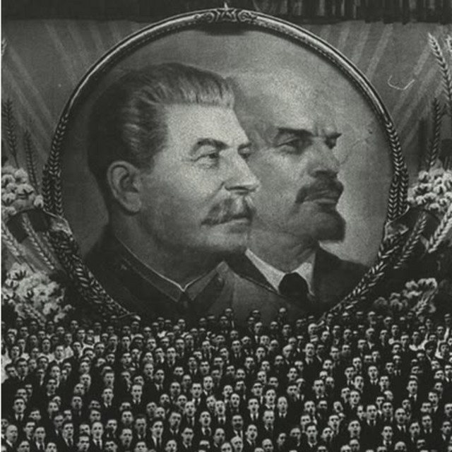

The Eclectic Polymath Podcast · Archive
#051 George Orwell: The Architect of Common Decency

About this episode
George Orwell is often quoted as a warning label for modern politics, but his life was more complicated than the shorthand. Before he became the author of Animal Farm and Nineteen Eighty-Four, he was a colonial policeman in Burma, a witness to poverty in Britain and France, and a volunteer shaped by the violence and betrayal of the Spanish Civil War.
This episode traces how those experiences formed Orwell’s politics: his hatred of imperialism, his commitment to democratic socialism, and his fierce opposition to totalitarian power from both the right and the left.
We look at how Orwell became obsessed with the relationship between language and reality — how propaganda corrupts thought, how institutions manipulate truth, and how ordinary people can be crushed when power controls the terms of what is real.
Key points
- George Orwell is often quoted as a warning label for modern politics, but his life was more complicated than the shorthand.
- Before he became the author of Animal Farm and Nineteen Eighty-Four, he was a colonial policeman in Burma, a witness to poverty in Britain and France, and a volunteer shaped by the violence and betrayal of the Spanish Civil War.
- This episode traces how those experiences formed Orwell’s politics: his hatred of imperialism, his commitment to democratic socialism, and his fierce opposition to totalitarian power from both the right and the left.
- We look at how Orwell became obsessed with the relationship between language and reality
More like this
 #221 The Homestead: Who Got Set Up, Who Got StrippedOctober 18, 20261:14:22
#221 The Homestead: Who Got Set Up, Who Got StrippedOctober 18, 20261:14:22 #219 The Grove & The Americana: Fake Towns, Real EmpireOctober 17, 202649:36
#219 The Grove & The Americana: Fake Towns, Real EmpireOctober 17, 202649:36
#098 The Bolshevik/Russian Revolution: How Empire Became the Soviet StateJuly 18, 20261:15:58 #085 Arabization and Islamization: How Conquest Became CultureJuly 6, 202652:16
#085 Arabization and Islamization: How Conquest Became CultureJuly 6, 202652:16